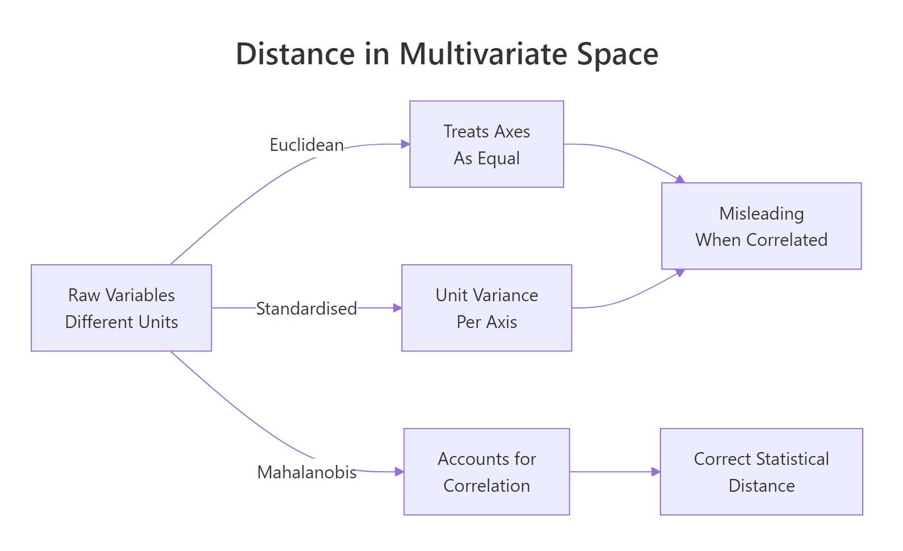
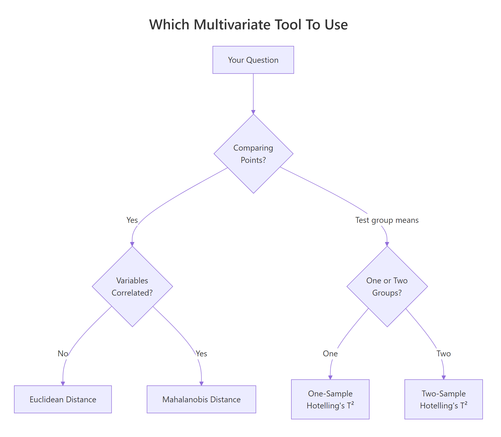
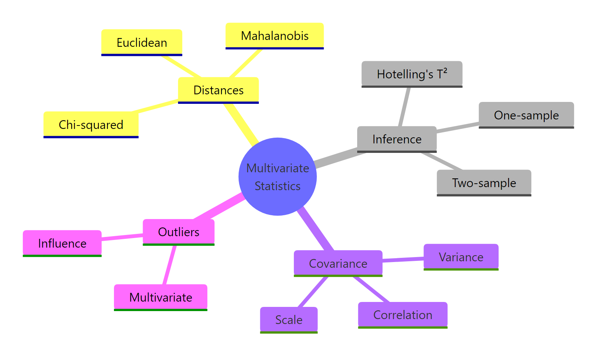

Multivariate Statistics in R: Distances, Mahalanobis, and Hotelling's T² Demystified
Multivariate statistics accounts for the correlation between measured variables when you compare points, flag outliers, or test group means, so related features aren't treated as if they were independent.
Why do we need a multivariate distance?
Picking the "most unusual" car in mtcars sounds easy until you notice that horsepower and weight move together. Treat the variables as independent and you get one ranking; respect their correlation and the order flips. That mismatch is the whole point of multivariate thinking. Let's measure it on real data and watch which cars change rank.
Notice how three Cadillac-class heavy luxury cars dominate the Euclidean top 5, but the Mahalanobis ranking swaps in a Toyota Corona and a Lotus Europa, two cars that are not far from the centroid in raw units but are strange given the correlation between horsepower and weight. Euclidean distance tells you "far from average." Mahalanobis distance tells you "surprising, accounting for how the variables usually move together."
Try it: Using airquality, pull row 10 and compute the squared Euclidean distance and the Mahalanobis² distance to the centroid using Ozone, Wind, and Temp. The two values should disagree.
Click to reveal solution
Explanation: The Euclidean value is dominated by Ozone's raw scale (ppb). The Mahalanobis² value is unit-free and small because row 10 is not actually surprising given the joint behaviour of Ozone, Wind, and Temp.
What is Euclidean distance, and when does it mislead us?
Euclidean distance is the plain straight-line distance between two points. For two vectors $x$ and $y$ in $p$ dimensions:
$$d_E(x, y) = \sqrt{\sum_{i=1}^{p} (x_i - y_i)^2}$$
Where:
- $p$ = number of variables
- $x_i, y_i$ = the $i$-th coordinate of each point
- $d_E(x, y)$ = the non-negative distance
In R, the dist() function computes pairwise Euclidean distances across every row of a matrix. Here is what that looks like on the first five rows of our three-variable mtcars subset.
The units dominate the arithmetic. Horsepower is measured in hundreds while weight is measured in thousands of pounds, so hp differences swamp everything else. A natural fix is to scale each variable to unit variance before taking distances, which is what scale() does.
Scaling fixes the units problem but not the correlation problem. In mtcars, heavier cars have more horsepower; in a scaled Euclidean distance those two correlated variables still both contribute to the "unusual" axis, double-counting the signal.
hp and wt rise together, both contribute to distance even though they carry overlapping information. Scaling doesn't fix this; Mahalanobis does.Try it: Compute the Euclidean distance between the Mazda RX4 and the Merc 240D rows using only mpg, hp, and wt.
Click to reveal solution
Explanation: The raw hp difference (110 vs 62) dominates, producing a distance that is driven almost entirely by one variable.
How does Mahalanobis distance account for correlation?
Think of Mahalanobis distance as Euclidean distance after straightening out the variables. First, rescale each axis so variables have unit variance. Then rotate so the correlated directions become independent. Finally, measure straight-line distance in that new, cleaned-up space. That is exactly what the covariance matrix does when you invert it and sandwich it inside the distance formula.

Figure 1: Three ways to measure distance between multivariate points. Only Mahalanobis accounts for correlation.
Formally, the Mahalanobis distance between a point $x$ and a centre $\mu$ uses the inverse of the covariance matrix $\Sigma$ as a metric:
$$d_M^2(x, \mu) = (x - \mu)^T \, \Sigma^{-1} \, (x - \mu)$$
Where:
- $x$ = the observation vector of length $p$
- $\mu$ = the centre (often the mean vector)
- $\Sigma$ = the $p \times p$ covariance matrix of the variables
- $\Sigma^{-1}$ = the inverse, which "whitens" the axes
- $d_M^2$ = the squared Mahalanobis distance
R's built-in mahalanobis() returns the squared distance directly. We already have ctr and S from the opening block; we can reuse them.
To see what the formula is actually doing, do it by hand. The inverse covariance matrix acts as a "straightener" that decorrelates and standardises in one step.
Both match, which tells you nothing new mathematically but a lot pedagogically: the built-in function is just three matrix operations.
p degrees of freedom. qchisq(0.975, df = p) gives a 2.5% tail cutoff in one line.Try it: Compute the Mahalanobis² distances for the complete-case airquality rows using Ozone, Wind, Temp.
Click to reveal solution
Explanation: The mean of Mahalanobis² across observations is approximately p (here 3), because under multivariate normality it follows a chi-squared distribution with p degrees of freedom.
How do we detect multivariate outliers with Mahalanobis?
Once you have Mahalanobis² for every observation, the chi-squared connection gives you a ready-made cutoff. Pick a tail probability, look up the matching quantile, and flag anything above it. That is the textbook multivariate outlier rule.
One car crosses the threshold at the 2.5% tail. Loosen the cutoff to the 95% quantile and more cars qualify; tighten it to 1% and the list can become empty. The cutoff is a tuning knob, not a universal rule.
solve(S) then produces enormous numbers and Mahalanobis² explodes. Rule of thumb: keep n at least 5 to 10 times p, or use a regularised covariance estimator.Try it: Using the ex_m2 values you computed above, flag airquality outliers with a 99% cutoff (df = 3) and count them.
Click to reveal solution
Explanation: Raising the tail probability from 0.975 to 0.99 shifts the cutoff higher, so fewer points qualify as outliers.
What is Hotelling's T², and why is it the multivariate t-test?
The univariate t-test asks: "how many standard errors does my sample mean sit from a hypothetical value?" Hotelling's T² asks exactly the same question in $p$ dimensions, using the sample covariance as the "standard error matrix." The algebra is the univariate formula, generalised.
$$T^2 = n \, (\bar{x} - \mu_0)^T \, S^{-1} \, (\bar{x} - \mu_0)$$
Where:
- $n$ = sample size
- $\bar{x}$ = sample mean vector of length $p$
- $\mu_0$ = hypothesised mean vector
- $S$ = sample covariance matrix
- $T^2$ = the Hotelling's T² statistic
Look carefully at the right-hand side: it is $n$ multiplied by the squared Mahalanobis distance between the sample mean and the null hypothesis. The multivariate t-test is Mahalanobis in disguise.
A T² of 1.27 is small. The corresponding F is 0.40 with a p-value of 0.76, so the mtcars mean is plausibly consistent with (mpg = 20, hp = 150, wt = 3.2). Package implementations handle all this bookkeeping for you.
The function returns the F-form statistic directly (labelled T.2), and the p-value matches our manual calculation.
Hotelling, ICSNP, DescTools, and MVTests all implement it with slightly different conventions. DescTools::HotellingsT2Test is a lightweight default that works in both one-sample and two-sample modes.Try it: Test whether iris setosa's four numeric means equal c(5.0, 3.4, 1.5, 0.25).
Click to reveal solution
Explanation: The test strongly rejects the null. Setosa's mean vector sits far from the hypothesised centre once you account for the joint structure of the four measurements.
How do we run a two-sample Hotelling's T² test in R?
Shift the question from "is my mean at a particular value?" to "do two groups share the same mean vector?" That is the two-sample Hotelling's T² test. It is the correct tool when you want a single yes/no answer about multivariate group difference and your outcomes are correlated.
F is 16.47 on 3 and 28 degrees of freedom, p below 1e-5. Manual and automatic transmission cars do not share a common mean vector across mpg, hp, and wt. A naive analyst might ignore this and run three separate t-tests.
Only two of the three univariate tests clear a Bonferroni cutoff. Hotelling's T², which pools information across the three correlated outcomes in a single decision, gives a much sharper p-value. For group comparisons across several related variables, the multivariate test is both more powerful and more honest about the multiple-testing problem.

Figure 2: Pick the right tool: distance for points, Hotelling's T² for group means.
Try it: Run a two-sample Hotelling's T² comparing iris versicolor and virginica across all four numeric columns.
Click to reveal solution
Explanation: The test flags a huge multivariate gap between the two species. The F-statistic is two orders of magnitude larger than our mtcars example, driven by the strong differences in petal measurements.
Practice Exercises
Exercise 1: Multivariate outliers in airquality
Using the complete-case rows of airquality across Ozone, Solar.R, Wind, and Temp, compute Mahalanobis² from the grand mean and flag rows above the 97.5% chi-squared cutoff. Store the flagged indices in my_out_idx.
Click to reveal solution
Explanation: With four variables the cutoff is qchisq(0.975, 4) ≈ 11.14. About 7 of the 111 complete-case rows exceed it, all driven by unusual ozone-plus-solar combinations.
Exercise 2: Build Hotelling's T² from scratch
Write a function my_hotelling_t2(X, mu0) that returns a named vector with T², F, df1, df2, and the p-value. Do not load any packages beyond base R. Validate it on mtcars_mv against DescTools::HotellingsT2Test.
Click to reveal solution
Explanation: The function produces the same F and p-value as DescTools::HotellingsT2Test(mtcars_mv, mu = c(20, 150, 3.2)) because both are the same arithmetic.
Exercise 3: Why one T² beats several t-tests
Simulate $n = 30$ per group from a 3-dimensional multivariate normal with strong positive correlation and a small mean shift along the "all variables rise together" direction. Show that three univariate t-tests (each Bonferroni-adjusted) fail to reject at 0.05 while one Hotelling's T² does reject.
Click to reveal solution
Explanation: The mean shift is small in each coordinate, so each univariate test alone is underpowered. The multivariate test detects the combined shift along the correlated direction and rejects cleanly.
Complete Example
The iris dataset gives a clean end-to-end illustration. Take setosa and versicolor, the two species most commonly contrasted in introductory work, and ask: do their four measured features come from populations with the same mean vector?
The pooled-covariance Mahalanobis distance between setosa and versicolor centroids is about 9.5 standard-deviation units in the whitened space, which is huge. The two-sample Hotelling's T² confirms it with an F of 550 and a p-value numerically zero. Setosa and versicolor are separated by a clear, statistically overwhelming gap across the four correlated flower measurements, and we have three aligned numbers saying the same thing: the multivariate distance, the T² statistic, and the F-test.
Summary

Figure 3: The core ideas of multivariate statistics covered in this tutorial.
Five takeaways to remember:
- Euclidean distance ignores correlation. Use it only when variables are already uncorrelated and on the same scale.
- Mahalanobis distance whitens the variables through the covariance inverse, giving a correlation-aware statistical distance.
- Under multivariate normality, Mahalanobis² follows a chi-squared distribution with
pdegrees of freedom, giving a natural outlier threshold viaqchisq(). - Hotelling's T² is the multivariate t-test. It equals
n × Mahalanobis²between the sample mean and the null hypothesis, and converts to an F-statistic for inference. - Comparing two group means across several correlated outcomes deserves one Hotelling's T², not many Bonferroni-corrected t-tests, which leak power and ignore the joint structure.
| Tool | Input | What it answers |
|---|---|---|
| Euclidean distance | Two points | Straight-line distance, correlation-blind |
| Mahalanobis² | Point, centre, covariance | Correlation-aware squared distance |
| χ² threshold on Mahalanobis² | Mahalanobis² values, df = p | Multivariate outlier flag |
| One-sample Hotelling's T² | Data matrix, hypothesised mean | Does the sample mean equal µ₀? |
| Two-sample Hotelling's T² | Two groups | Do the two mean vectors differ? |
References
- Mahalanobis, P.C. (1936). On the generalized distance in statistics. Proceedings of the National Institute of Sciences of India 2: 49–55. Link
- Hotelling, H. (1931). The generalization of Student's ratio. The Annals of Mathematical Statistics 2(3): 360–378. Link
- Johnson, R.A. & Wichern, D.W. (2007). Applied Multivariate Statistical Analysis, 6th ed. Prentice Hall.
- R Core Team. *
mahalanobisfunction reference*. stats package. Link - Signorell, A. and others. DescTools: Tools for Descriptive Statistics, HotellingsT2Test reference. Link
- Curran, J. (2018). Hotelling: Hotelling's T² Test and Variants. CRAN package. Link
- Penn State STAT 505, 7.1.15 Two-Sample Hotelling's T² Test Statistic. Link
- Mahalanobis distance. Wikipedia. Link
Continue Learning
- PCA in R, decompose the same covariance matrix into orthogonal components to see the directions Mahalanobis is implicitly straightening.
- LDA in R, the supervised cousin of Mahalanobis distance for classification, using between-group scatter to separate classes.
- MANOVA in R, extend two-sample Hotelling's T² to three or more groups across multiple outcomes.